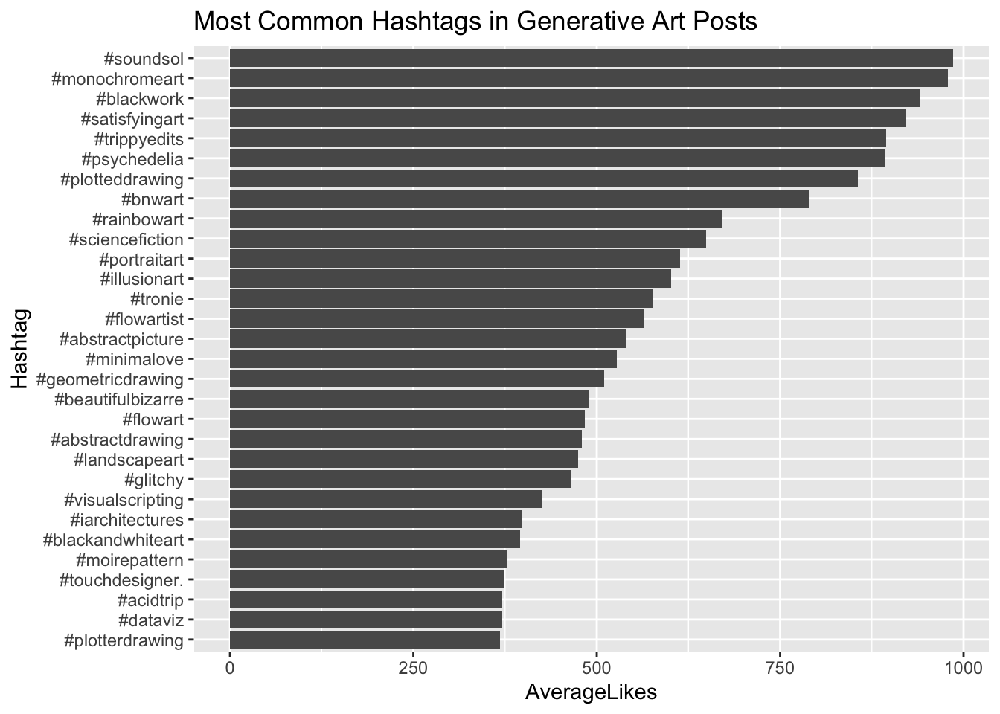
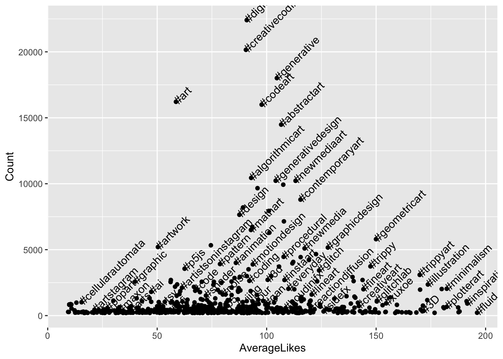
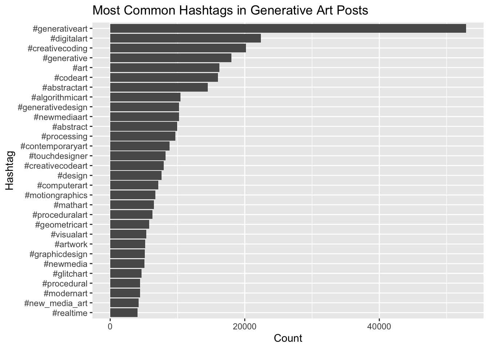
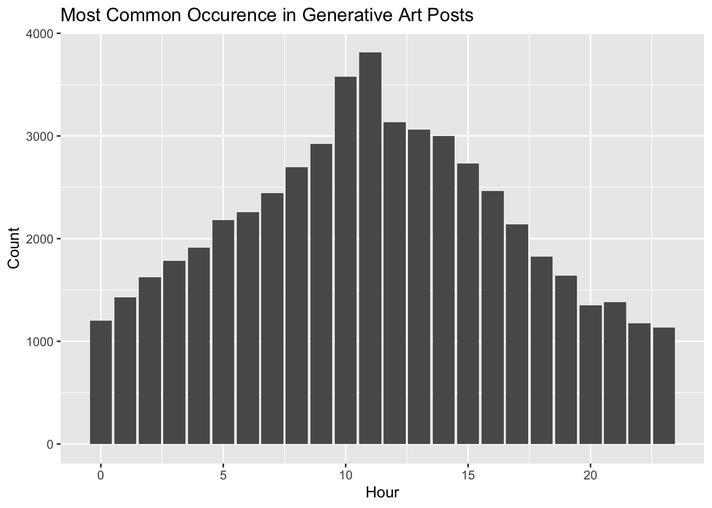
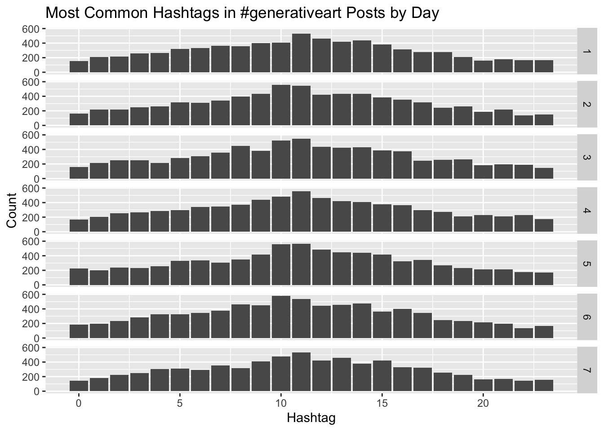
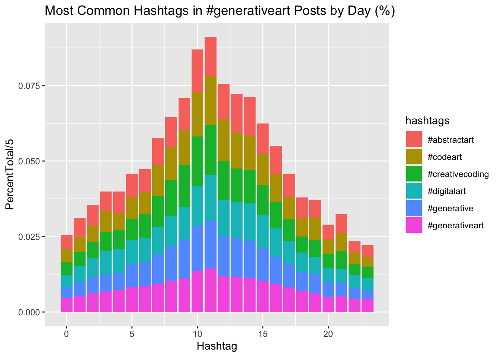

I have been curious on what makes an interesting post on instagram based on a larger dataset of images that have been tagged with #generativeart. Some of this is just data discovery, this could seem that there may be a correlation between the tags that have been used and the amount of likes there are.
# Extract hashtags
patt <- regex("#\\S+")
genart <- read_csv("~/InstaCrawlR/table-generativeart-2020-10-11 13:35:33.csv")## Warning: Missing column names filled in: 'X1' [1]## Parsed with column specification:
## cols(
## X1 = col_double(),
## ID = col_character(),
## Post_URL = col_character(),
## Img_URL = col_character(),
## Likes = col_double(),
## Owner = col_double(),
## Text = col_character(),
## Date = col_datetime(format = "")
## )genart_db <- genart %>% select(ID, Likes, Owner, Date, Text) %>% mutate(hashtags = str_extract_all(Text,patt) )
genart_db_table <- genart_db %>% unnest(cols = "hashtags") %>% mutate(Year = year(Date), Month = month(Date), DayOfWeek = wday(Date), Day = day(Date), Hour = hour(Date))genart_db_table %>% head()## # A tibble: 6 x 11
## ID Likes Owner Date Text hashtags Year Month DayOfWeek
## <chr> <dbl> <dbl> <dttm> <chr> <chr> <dbl> <dbl> <dbl>
## 1 CGNk… 1 1.90e8 2020-10-11 12:42:04 In t… #axidraw 2020 10 1
## 2 CGNk… 1 1.90e8 2020-10-11 12:42:04 In t… #penplo… 2020 10 1
## 3 CGNk… 1 1.90e8 2020-10-11 12:42:04 In t… #plotter 2020 10 1
## 4 CGNk… 1 1.90e8 2020-10-11 12:42:04 In t… #genera… 2020 10 1
## 5 CGNk… 1 1.90e8 2020-10-11 12:42:04 In t… #proced… 2020 10 1
## 6 CGNk… 1 1.90e8 2020-10-11 12:42:04 In t… #codeart 2020 10 1
## # … with 2 more variables: Day <int>, Hour <int>That will generate a rather large dataset
genart_db_table %>% count()## # A tibble: 1 x 1
## n
## <int>
## 1 1044625Instead of having too muc
exclude_tags <- c("#fishart","#artphotohraphy", "#marinephotography","#underwaterscenes","#sharkattack","#акула","#вебпанк","#сос","#seaphotography","fishart","#sharks","#enhancedvitimins")
genart_db_hashtag_mean <- genart_db_table %>%
group_by(hashtags) %>%
summarize(AverageLikes = mean(Likes), Count = n()) %>%
filter(!hashtags %in% exclude_tags, Count > 50) %>%
arrange(-AverageLikes)
genart_db_hashtag_mean %>% head(30) %>% ggplot(aes(reorder(hashtags,AverageLikes), AverageLikes)) + geom_col() + coord_flip() + labs(title = "Most Common Hashtags in Generative Art Posts",
x
= "Hashtag")
genart_db_hashtag_mean %>% filter(AverageLikes < 200, Count > 200, Count < 40000) %>% ggplot(aes(AverageLikes, Count, label = hashtags)) + geom_point() + geom_text(check_overlap = TRUE, angle = 45, hjust =0) This leads to some very interesting issues of certain tags that may need to be removed from the set due to their
genart_db_table %>%
group_by(hashtags) %>%
summarize(Count = n()) %>%
arrange(-Count) %>% head(30) %>%
ggplot(aes(reorder(hashtags,Count), Count)) + geom_col() + coord_flip() + labs(title = "Most Common Hashtags in Generative Art Posts",
x
= "Hashtag") So it appears that the #generativeart tag is the greatest here which would make sense…
genart_db_table %>% filter(hashtags %in% c("#generativeart")) %>%
group_by(hashtags, Hour) %>% summarize(Count = n()) %>%
ggplot(aes(Hour, Count)) + geom_col() +labs(title = "Most Common Occurence in Generative Art Posts", x = "Hour")
But we might want to see if there is a difference at a more granular level.
genart_db_table %>% filter(hashtags %in% c("#generativeart")) %>%
group_by(hashtags, Hour, DayOfWeek) %>% summarize(Count = n()) %>%
ggplot(aes(Hour, Count)) + geom_col() + facet_grid(DayOfWeek ~ .) +labs(title = "Most Common Hashtags in #generativeart Posts by Day",
x = "Hashtag") None really when looking at the detail here.
genart_db_table %>% filter(hashtags %in% c("#generativeart", "#digitalart","#creativecoding", "#generative", "#codeart","#abstractart")) %>%
group_by(hashtags, Hour) %>% summarize(Count = n()) %>%
mutate(PercentTotal = Count / sum(Count)) %>%
ggplot(aes(Hour, PercentTotal/5, fill = hashtags)) + geom_col() +labs(title = "Most Common Hashtags in #generativeart Posts by Day (%)",
x = "Hashtag")  Now we want to make sure we don’t just take that to mean that generativeart need to
TODO
- Add a graph of the